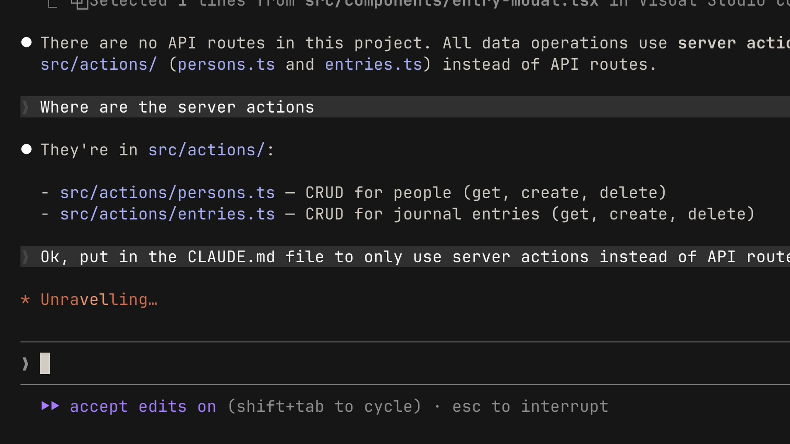

Claude Code에서 가장 유용한 기능 중 하나가 바로 CLAUDE.md 파일입니다. 이 파일은 Claude Code에 프로젝트에 대한 지속적인 기억을 제공합니다.
해결하는 문제
CLAUDE.md 파일 없이 Claude Code를 열면, 매번 처음부터 시작하게 됩니다. 코드베이스를 다시 탐색하고, 어떤 의존성이 필요한지 파악하고, 어떤 기능이 이미 구현되어 있는지 이해해야 합니다. 때때로 가정을 세우기도 하는데, 이로 인해 Claude를 올바른 방향으로 이끌기가 더 어려워집니다.
CLAUDE.md가 이 문제를 해결합니다. 프로젝트 루트에 추가하는 마크다운 파일로, Claude Code가 세션을 시작할 때마다 자동으로 읽습니다. 코드베이스를 위한 온보딩 스크립트라고 생각하면 됩니다. CLAUDE.md 파일의 내용은 프롬프트에 자동으로 추가됩니다.
예시
일반적인 CLAUDE.md 파일은 다음과 같습니다:
# Project
This is a Next.js 15 app using the App Router, Tailwind, and Drizzle ORM.
# Commands
- Dev server: `pnpm dev`
- Run tests: `pnpm test`
- Lint: `pnpm lint`
# Code Style
- Use 2-space indentation
- Prefer named exports
- All API routes go in app/api/
- Use server actions instead of API routes where possible간단명료합니다. 이제 Claude Code에 React 컴포넌트를 만들어 달라고 요청하면, 스타일링에 Tailwind를 사용하고 코드 규칙을 따라야 한다는 것을 이미 알고 있습니다.

CLAUDE.md는 팀을 위한 것입니다
CLAUDE.md를 버전 관리 시스템에 커밋할 수 있으며, 그렇게 하는 것이 좋습니다. 그래야 팀 전체가 혜택을 받을 수 있습니다. 실제로 대상에 따라 메모리 파일의 계층 구조가 있습니다:
- 프로젝트 레벨 CLAUDE.md는 프로젝트의 루트 디렉토리에 위치합니다. 팀과 공유됩니다.
- 사용자 레벨 CLAUDE.md는 설정 폴더에 위치합니다. 이것은 개인 전용이며 모든 프로젝트에 적용됩니다. 개인적인 선호 설정을 여기에 넣으세요.
팁
수정 사항을 메모리에 저장하세요. Claude를 반복적으로 교정하고 있다면 — 예를 들어 항상 API 라우트 대신 서버 액션을 사용하라고 말하는 경우 — Claude에게 그 규칙을 메모리에 저장하도록 명시적으로 요청하세요. 다음에 프로젝트를 열 때 이미 알고 있을 것입니다.

프로젝트 문서를 참조하세요. Claude가 참조하길 원하는 프로젝트 문서가 있다면, @ 기호와 파일 경로를 사용하세요:
## README.md
Please read if you need more info: @README.md
처음에는 없이 시작하세요. CLAUDE.md 파일 없이 프로젝트를 시작하는 것을 권장합니다. 그래야 모델을 어디서 지속적으로 교정해야 하는지 파악할 수 있습니다. 이렇게 하면 CLAUDE.md를 간결하게 유지하고 꼭 필요한 정보에만 집중할 수 있습니다. 준비가 되면 /init을 실행하여 Claude가 자동으로 생성하도록 하세요.
요약
답답한 Claude Code 세션과 생산적인 세션의 차이는 종종 컨텍스트에 달려 있으며, CLAUDE.md 파일이 바로 그 컨텍스트를 제공하는 방법입니다. 기술 스택, 선호 설정, 명령어부터 시작하여 사용하면서 점차 확장해 나가세요.